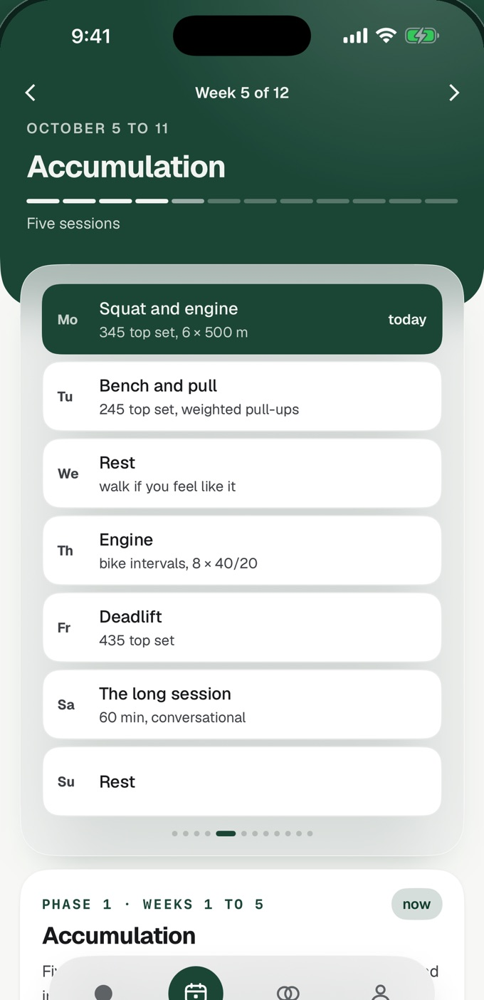
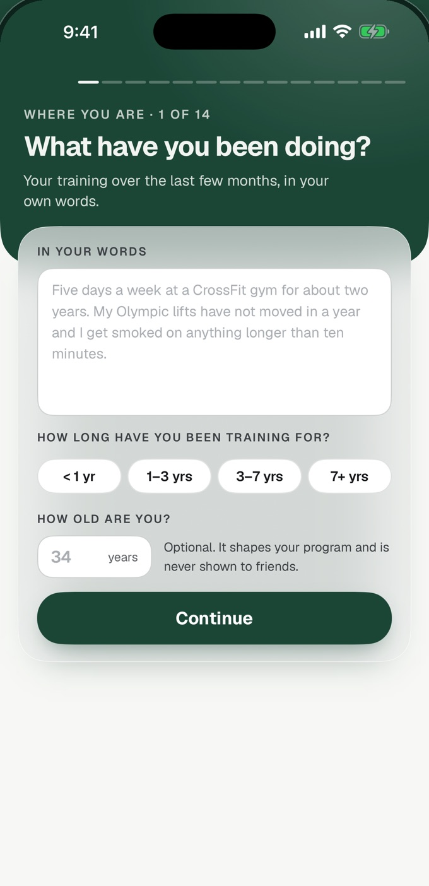
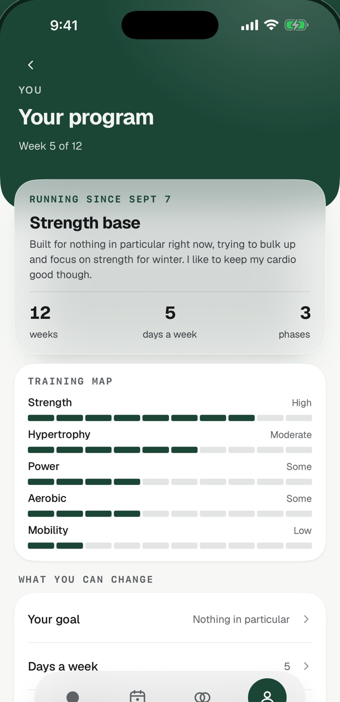
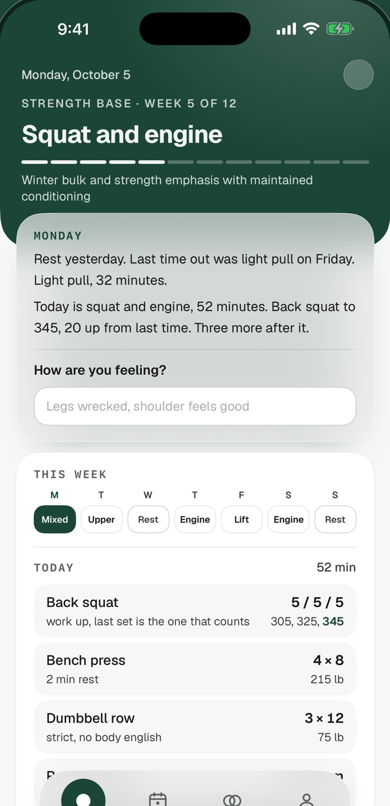

Coming to iPhone
Elite training. Built entirely around you.
Adaptive writes your whole training program around your goals, your week and your equipment, whether you lift, run, race HYROX or do all three. Writing programs is free, forever.
You're on the waitlist.
Adaptive will email when it comes to iPhone.
Follow along on Instagram, @adaptiveapp.

You don't have to pick one.
Pick every kind of training you do, as many as you like. Adaptive writes one program that fits them together, so your lifting, your running and your race prep share one week instead of fighting over it.
Not sure yet? “Still figuring it out” is one of the answers too. Pick it, and say in a sentence what you want from training.
Your style
How do you like to train?
Pick as many as apply.
- Lifting, picked
- General fitness
- Running, picked
- Bodybuilding
- Hybrid
- CrossFit
- Powerlifting
- Calisthenics
- Cycling
- Sport or athletic
- HYROX, picked
- Olympic lifting
- Swimming
- Rowing
- Still figuring it out
In your own words
Lifting four days, running two, and a HYROX in the spring.
Lifting and running, in one week.
Heavy leg days and hard runs sit at least a day apart, with easy runs in between, so neither lands on tired legs.
Bodybuilding with HYROX race prep.
Give it the race date. The weeks train the sleds, the carries and the runs off a station, around the sessions you lift for size.
Calisthenics with a 10K.
Skill work and the strength under it, with every run paced from a recent race.
How it works
Answer the intake once. Adaptive writes the program, and you train it.

Tell it how you train.
Fourteen chapters of questions: what you're chasing, the time you have, what you train with, what you enjoy and what you dread. Any answer can carry a sentence in your own words.

It writes your whole program.
Every week of the block is written as its own week, on the days you can train, for the time you have and the equipment you name. Two days a week or six, a full facility or bodyweight only. Writing programs is free, forever.

Then it changes with you.
Train the day, then tell it how it went. With Training Intelligence, your reviews, notes and sleep change the weeks ahead, and each morning Today says what changed and why.
Programmed the way training actually works.
Each kind of training has its own logic. Adaptive programs each one by it, then fits them into one week.
Powerlifting
Heavy is a skill.
Near your max the bar moves slower, and the bracing, timing and positions change. They only improve with heavy, crisp sets that stop short of a grind.
How Adaptive programs it: Heavy is a skill.
Adaptive writes the block from its training principles, from RPE loading to how a taper should run. Volume comes down as the bar gets heavier, and in the last two weeks it drops while the bar stays heavy, so the fatigue clears.
Running
Easy miles build the engine.
At conversation pace your muscles add mitochondria and capillaries, and both grow with time on your feet. Medium effort every run is too hard to recover by tomorrow and too easy to make you faster.
How Adaptive programs it: Easy miles build the engine.
Adaptive sets your paces from a recent race, and about 80% of your running stays easy. Programs for runners keep some strength work in the week.
HYROX
The run after the sled.
In a race you run 1 km eight times, each one straight off a station with your heart rate close to max. Your fresh 1 km time says little about how that goes.
How Adaptive programs it: The run after the sled.
Adaptive starts runs straight off a station, practices sleds and carries at race weight, and saves full simulations for once or twice a program.
Bodybuilding
Count the week, not the day.
Muscle growth tracks hard sets per muscle each week, about 10 to 20 for a muscle you're building. Split across two sessions, each set starts fresher.
How Adaptive programs it: Count the week, not the day.
Adaptive counts hard sets for every muscle each week and keeps each one in its growth range, split across at least two sessions.
Training Intelligence
Your program, adapting with you.
Training Intelligence is the subscription that runs your program with you. It reads every session and changes the weeks ahead, without you typing a prompt.
- Your reviewsHow hard the session was, the top set, and what you wrote.
- Your notesWrite how training is going, and get an answer.
- Your sleepFrom a wearable, through Apple Health, read only.
Marks, charts, your training history and Friends come with Training Intelligence too. Writing programs stays free, with or without it.
What changed this block
Example- Squat top setRPE 7 two weeks running+10 lbnext top set
- SleepFour short nights in a rowEasedthis week's volume
- Threshold runMissed on TuesdayMovedto Wednesday
- Long runEasy all three weeks+1 minow 10 mi
One bad night changes nothing. Four in a row eases the week.
A missed session moves, and a missed week is offered as a repeat.
Questions
Something else? Write to hello@tryadaptive.app.
Is Adaptive free?
Writing programs is free, forever: the intake, your first program, a new one whenever you ask, and the one after a block ends.
Training Intelligence, the part that changes your program as you train, is an optional subscription. Writing programs stays free whether or not you subscribe.
What if you train for more than one thing?
Pick all of them. The intake asks how you like to train and takes as many answers as you like, from lifting and running to HYROX, cycling and swimming.
Adaptive writes one program for the whole mix, with every session placed against the rest of the week.
What if you're not sure what you want yet?
Pick “Still figuring it out” and say in a sentence or two what you want from training. Adaptive writes the program from your answers.
What equipment do you need?
Whatever you have. The program is written for the equipment you name, from a full facility down to kettlebells only or bodyweight only.
Is it for beginners or experienced athletes?
Adaptive is for people who already train: strength, hybrid training, running from 5K to the marathon, and HYROX. It also writes programs for older beginners who are new to lifting.
The intake asks how hard the program should be, starting at gentle. Adaptive writes programs only for people 18 or older.
Is it only on iPhone?
Yes. Adaptive is an iPhone app, for iOS 17 or later.
When is it coming?
Adaptive is coming to iPhone. Join the waitlist and you will get an email when it does.
What happens to your email address?
It is used for one thing: to tell you when Adaptive comes to iPhone. The list is kept on Adaptive's own server, never sold or shared, and deleted once everyone on it has been told.
To come off it sooner, email hello@tryadaptive.app. The privacy policy has the details.
Hit your goals. Set new ones.
Adaptive writes your next program around them, and the one after that. Every program is yours to keep, and every one is free.
Coming to iPhone, for iOS 17 or later.
Join the waitlist
You're on the waitlist.
Adaptive will email when it comes to iPhone.
Follow along on Instagram, @adaptiveapp.